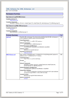
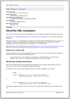
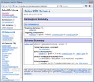
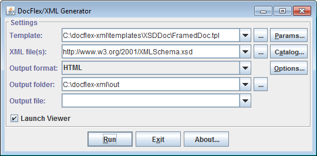

|
| DocFlex/XML is a software system for development and execution of high quality documentation and report generators from any data stored in XML files. For more details, please see: What is DocFlex/XML? |
The XSDDoc template set is found in
'templates/XSDDoc/' subdirectory of DocFlex/XML archive.
It is immediately ready to use. Just read How To Get Started!
This kind of documentation may be useful for both the XML schema authors (e.g. to publish the XML schema project on the web) and those who simply need to understand particular large XML schemas.
The framed HTML documentation provides most detailed and easy accessible information about all the XML schema components and interconnections between them.
These screenshots show such a documentation (click on a screenshot to view the real HTML):
Please, look also at XSDDoc | Examples page to view/download other demo HTML documentations generated from various large XML schemas found on Internet.
Similar to HTML, the RTF documentation may be also interconnected with hyperlinks. In addition, many hyperlinks are duplicated with page number references, which may greatly help to use/navigate such documentation in a printed form.
On the following screenshots, you can see pages of an RTF documentation generated by the same “XML Schema for XML Schemas” (click to enlarge):
See also Examples | RTF Documentation for more details about that demo RTF and other screenshots.


Here is an example of the XML schema documentation in PDF format generated in that way (click on the screenshot to see/download the PDF file, 2.6 MB):
Such documentation can be used both for printing and publishing on the web.
See also: FAQ | How to generate a single documentation by multiple XML schemas?
<xs:import>, <xs:include>
and <xs:redefine> elements:
<xs:redefine> elements.
See also: How everything is documented | XML Schemas | Processing/documenting of redefinitions
XML catalogs may be used in large XML schema projects to avoid referencing separate XML schema files from each other by direct file names. For more information, see DocFlex/XML | Documentation | Installation / Configuration Files | XML Catalogs.
| When you design a schema, you definitely use some of those design patterns, even when you haven't heard of them. Simply, in that case you reinvent the pattern by yourself. When a schema is generated by some tool, it always follows a certain pattern. |
So, how do all those design patterns differ from one another in respect of documenting them? Or asking it otherwise, what might be common?
If you look closely into this, you could notice that all XML schema design patterns come down to a few specifics, all of which can be addressed by a single documentation approach:
You don't need to do anything special about this.
Both <xs:import> and <xs:include> XSD elements
are supported. All referenced schemas will be automatically loaded and documented.
Moreover, using template parameters:
you can even specificaly disable documenting of imported/included schemas (even though they will be processed still).
That is done using <xs:redefine> XSD elements, which are supported
by XSDDoc very well!
See: Features | XML Schemas | Processing/documenting of redefinitions
If you document all of this straight (which is actually what all other known to us XML schema doc-generators do!), in certain cases you may get in your XML schema documentation a mess made of numerous repeating local element names, in which it could be difficult to find some useful information.
This XML schema doc-generator provides two ways of dealing with that problem:
When several locally declared elements have the same name but different content models, to distinguish them from one another across the documentation, the element names can be extended so us to make them unique. This is controlled by “Show | Local Element Extension” parameter.
For more details, see Features | Local Elements | Global Naming of Local Elements.
All those locally declared elements that share the same name and are based on the same global type (which means they have the same content model) can be represented and documented as a single entity called unified local element. That may substantially reduce and clarify the documentation!
This is illustrated by two documentations generated from the same XML schema: http://www.w3.org/2001/XMLSchema.xsd
On the left you can see the documentation generated with unifying local elements by type enabled. On the right, all local elements were documented straight, without any unification. Click on the screenshots to view the docs:
 |
 |
The difference is quickly visible when you look at the navigation list (bottom-right frame) of both documentations.
For further details, see Features | Local Elements | Global Documenting | Unifying Local Elements By Type.
Again, if you document it straight, various navigation lists and element summaries will get crowded with insignificant local elements, in which you may have trouble to find what you need.
XSDDoc also provides a way to deal with this. The “Generate Details | Elements | Local Elements” parameter allows you to specify that all local elements with simple content should be documented only locally within the details of their parent elements.
As an example, here are two documentations generated for the same little XML schema (from “Sales Report” sample). On the left is the documentation, in which only global elements and local elements with complex type are documented separately (globally). On the right, all elements are documented separately. Click on the screenshots to view the docs:

Such groups of elements, called substitution groups, are specifically recognized and documented by XSDDoc.
For example, the following “XML Schema for XSLT 2.0” (http://www.w3.org/2007/schema-for-xslt20.xsd) extensively uses substitution groups (click on the screenshot):
See also: Features | Global Elements | Substitution Groups
Using the following template parameters you can preserve the original ordering of your elements/attributes at various locations of the documentation:
In general, the W3C XML schema specification itself provides no functionality to assign which of the XML elements declared in an XML schema must be the root of any XML document that complies with that schema.
However, you can solve this problem by placing the declaration of the root element the first in the XML schema.
Further, when you generate documentation for that XML schema, unselect the “Generate Details | Sorting | Components” parameter so that the original order of element declarations will be preserved in the documentation.
If your XML schema is broken into several XSD files, specify the one of them that contains the root element declaration to be processed the first by the generator (see also FAQ | How to generate a single documentation by multiple XML schemas?) and unselect the “Generate Details | Sorting | Schemas” parameter.
That will ensure that the root element gets on the top of various navigation lists and summaries, which will highlight its special role.
| Straight documenting of several conflicting XML schemas together will likely produce incorrect documentation. Some links from the references to global components defined simultaneously in different schemas would go to wrong locations. What's more, the content models of some components (as well as other things) may be derived incorrectly. As a result, the whole such a documentation may be almost unusable. Yet, those conflicting schemas themselves may be quite correct at that! |
Since the version 2.6.0, XSDDoc is able to document correctly any number of conflicting XML schemas!
In short, this works as follows:
Here, schema reference is any of the elements: <xs:import>, <xs:include> and
<xs:redefine>
|
Note that any conflicting schemas, if they are correct indeed, cannot reference to each other (both directly and indirectly)!
<xs:import namespace="http://www.w3.org/XML/1998/namespace" schemaLocation="http://www.w3.org/2001/xml.xsd"/>
Such schemas will belong to all domains at once. They will be documented only once.
All links to the components defined in them will go to the same documentation locations from anywhere those components
are used.
Normally, such a subdirectory name is derived from the name of the XML schema file. If that name duplicates another schema's name, it will be extended with a numeric suffix so as to make the subdirectory unique. For example:
{xsddoc}/schemas/XMLSchema_xsd/
{xsddoc}/schemas/XMLSchema_xsd_1/
We believe that a true XML schema documentation should allow the user to quickly find any necessary meaningful information about the XML schema, if only that information could be automatically obtained or deduced from it. (At that, everything must be accurate -- not just claimed to be there -- which in fact is not so simple to achieve!)
The following documentation features that we have worked out and supported could help to achieve that objective.
No Java code has been written anywhere specifically for the purpose of XML schema doc-generation! Neither any other XML processing technologies (e.g. XSL Transformations) are used anywhere in background!
The XSDDoc templates provide great a lot of parameters (> 400), which make possible adjusting the content (and some formatting) of the generated XML Schema documentation within a huge range of details, starting from a few summaries and overviews up to the most comprehensive documentation containing every feature possible.
The following screenshot shows the contentElements.tpl template open in the Template Designer (click to see in full-size):
See Also: DocFlex/XML | Documentation | Designing Templates | Running Template Designer
However, DocFlex does support any kind of diagrams on the level of templates. Diagrams may be supplied also with hypertext imagemaps, which allow programming in templates the generation of diagram links to any parts of the documentation.
DocFlex treats diagrams as some kind of graphical representation of particular data source elements (DSM elements). Therefore, diagrams (along with the imagemaps) must come from the data source itself, via its driver. In the case of DocFlex/XML, the data source driver is basically a reader of XML files. But it can be configured with a special extension called Element Image Provider, which can generate some image representations (i.e. diagrams) for some XML elements. Those images are supplied together with the respective XML elements. So, they can be processed with templates (i.e. inserted in the output documentation).
How exactly the Element Image Provider produces the diagrams is beyond the DocFlex/XML core. It can be equally our own diagraming engine or an integration with some external system able to generate the necessary diagrams.
We do not have a diagramming engine yet. But we do have developed the integrations with several third-party XML editors able to generate the XSD diagrams. This includes:
The diagrams in the demo documentation have been generated via the integration with XMLSpy.In the Generator Dialog, you can:
Once you click the “Run” button, the dialog will transform itself to show the progress of the generation:
The parameter inspector is invoked from the generator dialog by clicking “Params” button. Its content is created dynamically from the parameter definitions found in the template.
The following screenshot shows the Parameter Inspector dialog of FramedDoc.tpl template (click on the picture to see a more expanded view):
In the Parameter Inspector you can:
The parameters are organized in groups (which may contain subgroups and so on). A group heading may also be a parameter itself.
Each parameter group may appear in expanded or collapsed state like a tree node. The group states are also saved in the generator.config file to be restored again when the inspector is invoked next time for the same templates. Using inspector popup menu, you can quickly reset all parameters in a group to their default values.
Besides the Parameter Inspector dialog, you can always set any template parameters directly on the command line using -p option.
| Integration | Annotation |
|---|---|
| Apache Ant | You may easily run XSDDoc from your Apache Ant build project. No special plugin is required! |
| Apache Maven | Running XSDDoc from Apache Maven is a bit more complicated. We had to develop a little “DocFlex/XML Maven Plugin” for this. Click on the link to see how to install and use it. |
| XMLSpy | The integration with Altova XMLSpy will let you to automatically insert the graphics diagrams produced by XMLSpy into the XML schema documentation generated by XSDDoc (with full support of diagram hyperlinks). |
| Oxygen XML | A similar integration with Oxygen XML Editor. It also inserts diagrams, however, now generated by OxygenXML. |
Click on the link in the first column to see the integration details.
generator.bat to specify the 'JAVA_HOME' variable according
to the location of Java 7, Java 6, Java 5 or Java 1.4.x installed on your system.
(Java 7 may be preferable as it is the fastest!)
If you don't have one of those Java versions installed on your system, you can freely download and install the most recent Java Runtime Environment (JRE) version from Java Technology web-site: http://www.oracle.com/technetwork/java/ (formerly http://java.sun.com)
generator.bat. You will see the Generator Dialog
like the one shown on this screenshot:
By default, XSDDoc will work in limited mode under the Limited Free License.
This mode allows you to generate a complete framed HTML documentation (without diagrams) by any your XML schemas and use it for any purposes. There is no limitation on the number or content of the processed XML schemas!
In limited mode, however, you cannot (or may not) do the following things:
Hence don't be surprised that you may get too big (complete) documentation, which is not exactly what you want. That what you want may be possible too, most likely when all customization parameters are enabled. But you have to pay for this (see below).